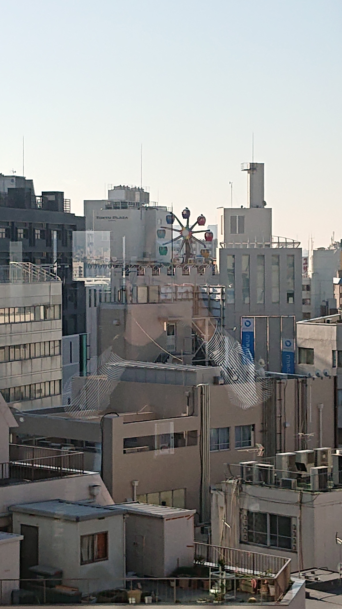
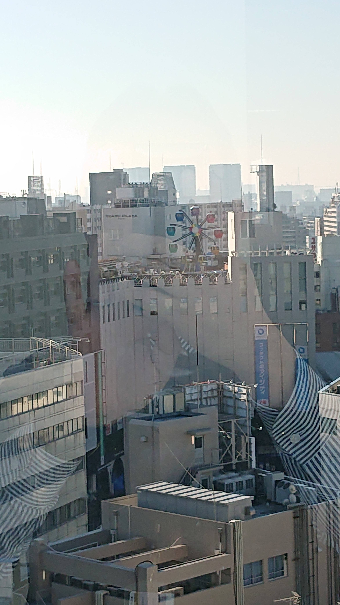
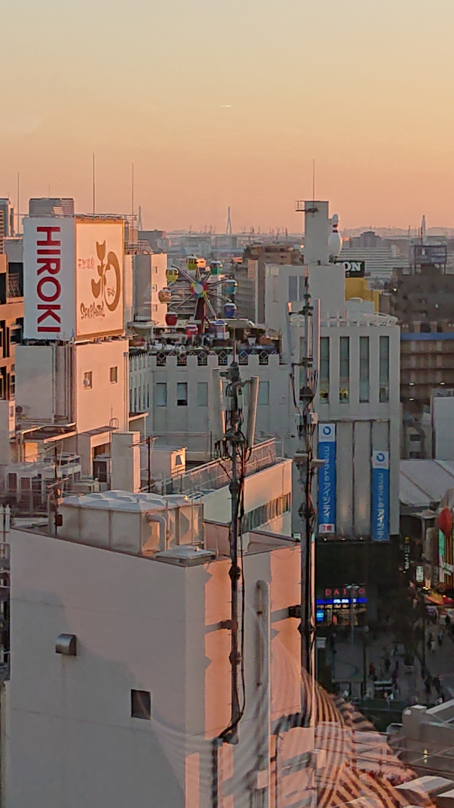

12Fの階段から見える風景
3号館の12階の階段からは、東急ストアの観覧車が見えます。なんともノスタルジックな風景です。
日中の観覧車
青空の下でゆったりと回転する観覧車を見ていると、開放された気分になります。いろいろ悩むこともあるけれど、なんだか自分が小さい存在のような気がして、くよくよするより、前を向いて少しずつ前進すれば良いんだなって思えるようになります。気づいたら、時間を忘れて、危うく授業に遅刻しそうになることもあるんです。
夕暮れ時の観覧車
夕暮れ時の茜色の空に影を落とす観覧車は、何だかセンチメンタルな気分になります。ふと人恋しくなり、友人を誘って学生ラウンジで取り留めのない話をしているうちに、明日も頑張ろうって思うんです。
12階の学生ラウンジ

12階の学生ラウンジは、とっても見晴らしが良く、晴れた日は富士山も見えるんです。この日は、スカイツリーが見えましたよ。